#0 프로젝트 생성
#1 솔루션/ 프로젝트/ 소스코드
#2 명령 프롬프트에서 exe파일 실행하기
*개인적인 공부 기록용으로 작성한 글이기에, 잘못된 내용이 있을 수 있습니다.
#0 프로젝트 생성
VisualStudio를 실행 > 새 프로젝트 만들기(N)
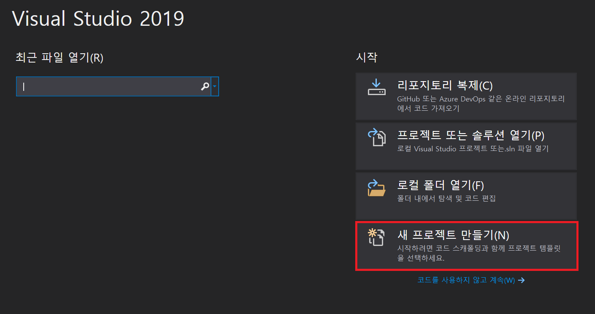
콘솔 애플리케이션 > 다음(N)
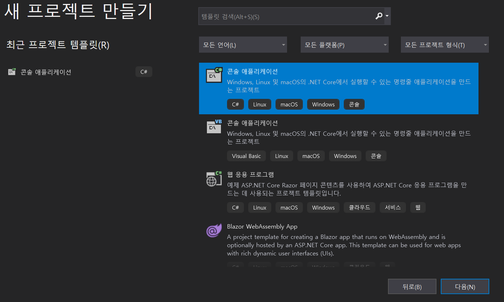
프로젝트 이름(J) 입력 후 다음(N)
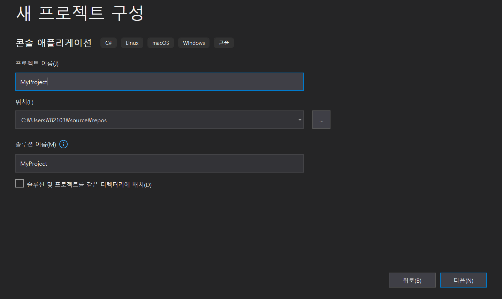
대상 프레임워크 설정 후 만들기(C)
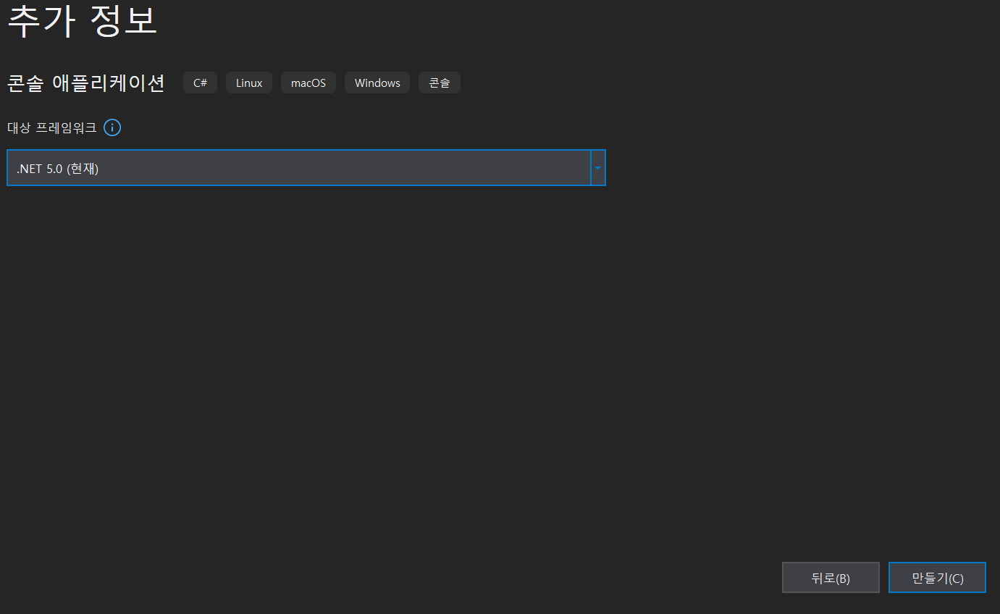
#1 솔루션 / 프로젝트 / 소스코드
#0의 과정을 끝마치셨다면 기본적으로, Hello World! 문자열을 출력하는 소스코드가 작성되어 있습니다.
F5를 눌러 실행시켜 봅니다.
using System;
namespace MyProject
{
class Program
{
static void Main(string[] args)
{
Console.WriteLine("Hello World!");
}
}
}
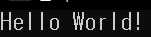
콘솔창이 열리고 , Hello World! 문자열이 출력되며 exe 파일이 생성 되었을 것 입니다.
우측의 "솔루션 탐색기" 에서 프로젝트 파일을 우클릭 한 뒤, "파일 탐색기에서 폴더 열기(X)" 를 클릭합니다.
그러면 소스코드, 프로젝트 파일 등이 있는 폴더로 이동합니다.
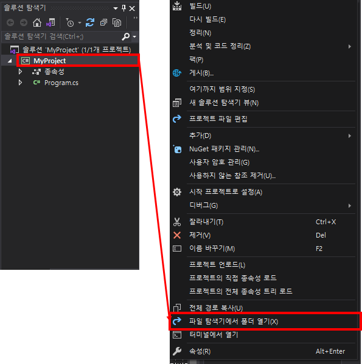
Program.cs (C# Source File) [소스코드] 가 모여서 MyProject(C# Project file) 하나의 [프로젝트] 파일을 이룹니다.
프로젝트 파일은 프로그램 개발을 위한 기본 단위 입니다.
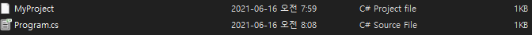
다음으로 Visual Studio Solution 유형의 .sln 확장자 파일이 보일텐데, 이것을 솔루션(Solution) 이라고 합니다. 솔루션은 프로젝트들을 묶는 역할을 수행합니다.
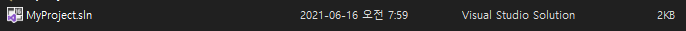
즉, cs(소스파일)이 모여서 project(프로젝트) 파일이 되고, 다시 프로젝트 파일이 모여서 sln(솔루션)파일이 됩니다.
#2 명령 프롬프트에서 exe파일 실행하기
#0에서 콘솔 애플리케이션을 선택 했던 것을 기억할 것 입니다. 콘솔 애플리케이션은 명령 프롬프트(cmd)에서 실행이 가능합니다. cmd에서 실행을 하기 위해서는 우선 exe 파일이 존재하는 경로가 필요합니다.
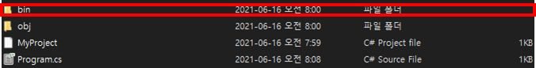 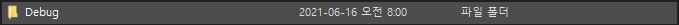 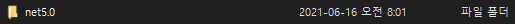 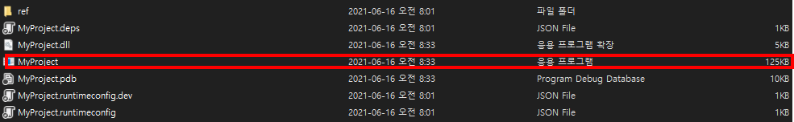
bin > Debug > net5.0 폴더로 이동한 뒤, 경로를 복사해 줍니다.
다음 윈도우 + R 키 + cmd 명령어로 CMD창을 열어 줍니다.
cd + 경로 를 입력해, 해당 폴더로 이동합니다.
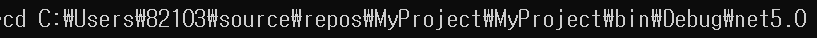
파일이름.exe 를 입력하면, "Hello World!"가 출력됩니다.
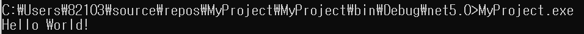